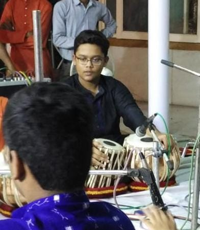
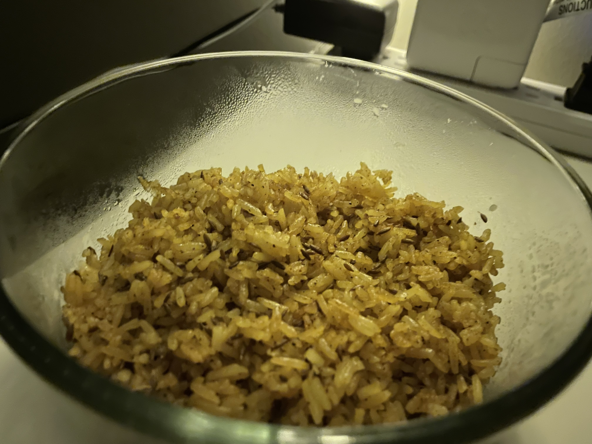

Hello! I am Sparsh, a second year Computer Science major at the University of British Columbia. I was born and brought up in India, and moved to Vancouver in 2020 in pursuit of higher education.
My introduction to programming was in my grade 8 computer lab. We were shown some very basic shape drawings in k-turtle. I remember finding it extremely tedious and unnecessary at the time, so when it was time to choose our electives in grade 9, I went with Economics. For the next two years I would not explore programming any further, I knew it wasn't for me.
Fast forward to grade 11, it was time to choose a new elective. I had to choose from 1) Economics 2) Biology and 3) Computer Science. I didn't enjoy Economics in grades 9 and 10, and Biology was a lot of rote learning, so I went with CS.
I struggled a lot in the first few weeks of classes. Most of my peers had some kind of background in programming, but I had no clue what was going on in class. I remember entering my first CS lab not knowing what an IDE was. I took help from both my peers and my teacher, and was able to wrap my head around the basics of C++. CS was the only class I used to look forward to, so naturally when it was time to pick a major for college, I went with CS.
I have thoroughly enjoyed my time as a CS major. The fact that it is pure logic and encourages lateral thinking is what draws me to CS. Collaborating with others to find creative solutions to problems is a dream of mine. I have explored my interest in web development through some personal projects, and a systems design course I took last semester has also piqued my interest in systems design. I look forward to exploring Artificial Intelligence through some AI courses at UBC.
This journey from stronly disliking CS to loving CS has been incredible, and I can't imagine pursuing anything else.
Tabla: Tabla is an Indian classical percussion instrument, and I have learnt it for over 9 years. I have also had the privalege of playing in large venues with renouned artists.
Sketching: Sketching is something I do in my free time, and I find it incrediably theraputic.
Cooking: I am probably the only person who can eat meals cooked by me, but I really enjoy experimenting with recipes. I have come up with some very interesting creations in my test kitchen.
Swimming: I absolutely love swimming. I have been swimming since a very young age, and I would go swimming almost daily during the hot summer months.